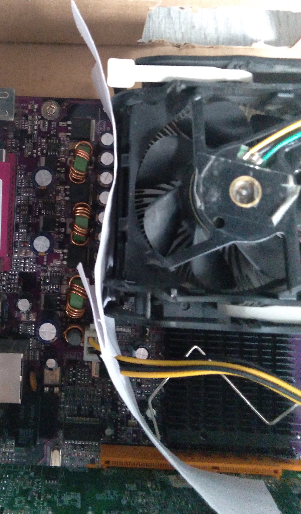
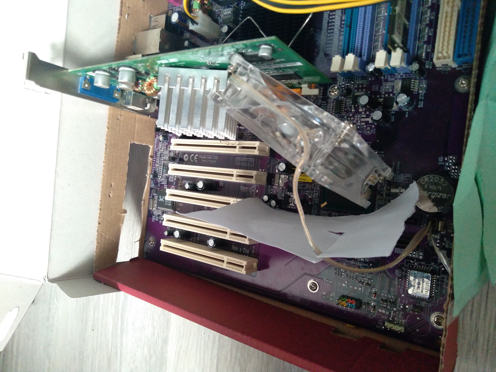

Ретрокомпьютер в 2021 году
Проблема температуры
Любая электроника греется, а уж компьютеры-то! Проблема усугубляется тем, что элементы старых компьютеров менее термоэффективны. Процессор из 00-х банально сильнее греется, чем какой-нибудь Intel Core. Поэтому, чтобы ничего не перегреть (а перегрев означает повреждение полупроводников), нам нужно максимально эффективно охлаждать всю систему.Первым делом я вытащил всё из корпуса. Материнская плата будет распологаться в картонной коробке. Это нужно, чтобы всё легко обдувалось. Прочность не особо важна, ведь комп я собираюсь использовать в стационарном режиме. Также, я поменял радиаторы на чипсете и видеокарте (с сопутсвующей заменой термопасты). Итак, вот, что мы имеем:

Температура ЦПУ свыше 50 градусов меня не очень радует, хотелось бы её уменьшить, поэтому в дело вступают мастера профессионального колхоза:


Голубой вентилятор охлаждает видеокарту. Однако, почему бы не создать единый воздушный поток, который всё охлаждать, вообще всё Может тяга будет больше, чем обдувать каждый радиатор по-отдельности. Бумажные перегородки у процессора мешают охлаждению конденсаторов и катушек - убираем их. Зато, чтобы тёплый воздух не задерживался в корпусе, этими перегородками можно создать канал для отвода тепла. Вентилятор ставим в проходе междю видюхой и стенкой корпуса, теперь "отработанный" воздух от процессора будет оводиться

Температура снизилась, но этого недостаточно. Как показли опыты, компьютер стартует холодным, но со временем набирает температуру. Добавляем тубус к процессорному кулеру, чтобы он вбирал только внешний, холодный воздух. Температура ЦПУ в режиме простоя (CMOS setup) стабилизировалась в районе 50 °C. Понятно, что под нагрузкой это превратится в 55, а то и 58 градусов, однако я и не собираюсь гонять на нём всякие киберпанки.